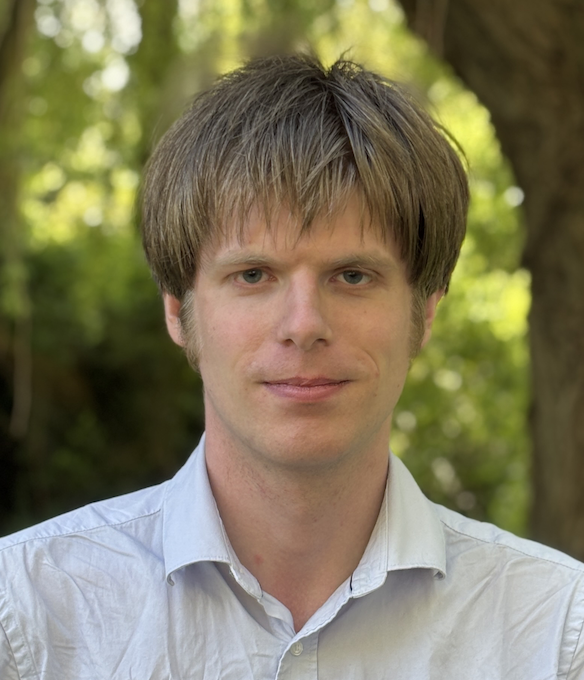

Niels van der Weide

About me
I am a postdoc/lecturer at the Radboud University.
Contact
Email: nweide [at] cs.ru.nl
Github: nmvdw
ORCID: 0000-0003-1146-4161
Office: M01.02.05
Mastodon
Interests
type theory, proof assistants, homotopy type theory, formalization of mathematics, (bi)category theory, formal verification
Publications and Talks
For a list of my publications and slides of my talks, click here.
You can also check dblp.
Dissertation
My dissertation, Constructing Higher Inductive Types, can be found here.